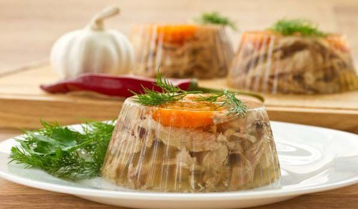
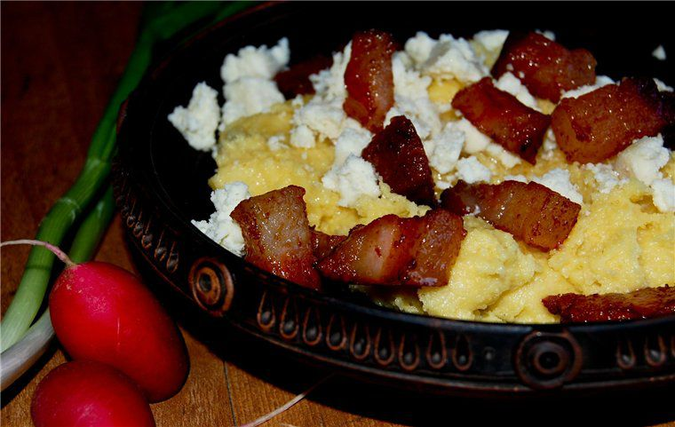
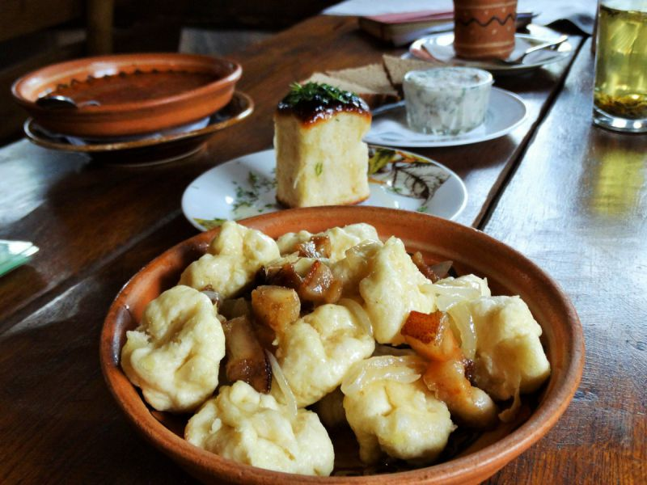

Борщ
Який же українець без борщу? Цією традиційною першою стравою обов'язково пригощають іноземців. У кулінарних книгах можна відшукати більш як 50 рецептів борщу, адже в кожному регіоні його готують по-різному. Наваристий м'ясний, приправлений салом ... Або ж пісний з квасолею чи грибами – такий варять під час посту, і вегетаріанці теж будуть задоволені. Замість м’яса можна класти рибу. Крім традиційних буряка, картоплі, моркви, цибулі, капусти та томатів, чого тільки не додають у борщ для пікантності! У деяких рецептах є навіть яблука, сухофрукти, чорнослив! До борщу часто подають пампушки з часником.
Фестивалі борщу проводять у однойменному селищі Борщів на Тернопільщині, а також у інших регіонах України. У жовтні такий фестиваль відбувся у Харкові – уже третій рік поспіль. До речі,вибрати готель Харкові можна на сайті з 215 варіантів.
Сало – це наше все!
Недарма кажуть: сало – український наркотик. Без нього нам просто нікуди. А скільки анекдотів про сало і українців! Один кум каже іншому: «Ти чув, що від сала розвивається склероз?» А той йому в відповідь: «А я-то думаю, як з'їм вранці шматок сала, так цілий день і не згадую, що їсти хочеться!» Існує безліч рецептів засолювання сала. Найпростіший: подрібнити часник, змішати з перцем, натерти сумішшю підчеревину або сало і витримати в холодильнику дні три. Можна додати духмяні спеції. Фестиваль сала вже став традиційним у Петриківці на Дніпропетровщині. А у Львові є дивовижний музей-ресторан «Сало», де проводять жирні вечірки, подають унікальні цукерки «Сало в шоколаді» та суші-сало.Підібрати житло у Львові не важко: на сайті ви знайдете більше 700 варіантів – від хостелу до шикарного готелю.
Капусняк запорізький
Якщо ви потрапите на Хортицю, у край козацької вольниці, на свята або фестиваль, вам обов'язково запропонують запорізький капусняк. Традиційно його готували наваристим – зі свининою і шпиком, кислою капустою і пшоном. Якщо варити на багатті з димком – аромат і смак чудовий. Якщо ви їдете в Запоріжжя, підшукати житло можна тут. Рецептів капустянка теж предостатньо, а в Збаражі на Тернопільщині проводять присвячений йому фестиваль
Домашні ковбаси
«Грудочка кашки, кільце ковбаски» – пам'ятаєте рядок з української колядки? Різдвяний стіл українців не обходиться без домашніх ковбас.
Дуже смачні ковбаси готують на Закарпатті – можна сподіватися, що вам запропонують «натурпродукт», запечений не в газовій духовці, а в сільській печі, зовсім інший запах, і смак більш пікантний! Приїжджайте на Закарпаття:10 найкращих ресторанів і кафе Ужгорода чекають на вас.
На Волині теж уміють готувати ковбаси: 2015 року в Луцьку виготовили найдовшу ковбасу – 5 метрів – і зафіксували досягнення у Книзі рекордів України
Холодець
Не всі іноземці «зрозуміють» наш холодець – заливну закуску з різних видів м'яса. Зате угорці точно оцінять: у них холодець – теж національна страва, там навіть проводять фестивалі холодцю. Українці традиційно подають холодець з хроном, гірчицею.
Варя гуцульська
Назва вже інтригує своєю самобутністю. Варя гуцульська – це салат родом з Буковини. Він хороший для посту – і ситний, і смачний. Беруть варений буряк, квасолю і чорнослив, приправляють соняшниковою олією. Якщо вирушаєте на Буковину, обов'язково відвідайте її серце – Чернівці, а варіант розміщення можна підібрати насайті.
Крученики м’ясні
А тепер переходимо до м’ясних шедеврів. М’ясо для кручеників (частіше яловичина або свинина) відбивають, а потім загортають у нього начинку, рулет зав’язують ниткою. Можна обсмажувати, а потім тушкувати. У регіонах України готують крученики з різними начинками: рис з цибулею, яйце, курага, чорнослив ... Часто використовують грибний фарш. Простір для експериментів – величезний. Наприклад, для ситних кручеників по-волинськи спочатку тушкують до напівготовності м’ясо, потім кладуть на нього шматок сала, прикриваючи зверху тушкованою капустою, і загортають.
Полядвиця
Ця страва – із серії «смачно і просто». Весь секрет –у шматку хорошої свинячої або яловичої вирізки. Її маринували в квасі, обвалювали в борошні, обсмажували у вершковому маслі – і далі запікали в духовці до готовності. Полядвицю урочисто готували на Різдво і на Великдень. Сучасні господині замість квасу використовують лимон: натирають ним шматок м'яса, а запікати зручно в рукаві.
Деруни житомирські
Українське Полісся славиться врожаями картоплі і стравами з неї. У Коростені на Житомирщині навіть встановлено пам’ятник деруну! Тут щорічно проводять фестиваль, присвячений цій страві. І яких тільки дерунів ви не спробуєте: і з м’ясом, і з сиром, і з грибами, і з творогом. Де зупинитися в Житомирі? Можливо, підійде варіант із запропонованих нами.
Білі гриби по-гуцульськи
Рецепт їх приготування дуже простий: відварити, підсмажити на олії, протушкувати в сметані або вершках, додати зелену цибулю, петрушку. Але вся справа у самих грибах! За ними обов’язково потрібно вирушати на Буковину, адже боровики – справжнє надбання тутешніх лісів.
Популярні грибні тури на Закарпаття. Але навіть якщо ви поїдете взимку, зможете купити сушених білих грибів або маринованих. Обирайте гастрономічний тур «Смачне Закарпаття» і насолоджуйтеся чудовою кухнею та дивовижною природою краю! Багато мандрівників вважають, що тут готують найсмачніші страви української кухні.
Печеня з грибами
Печеню з картоплі з грибами у горщиках зазвичай подають у всіх ресторанах української кухні, нескладно її приготувати і вдома. Але обов’язково варто спробувати цю страву на Західній Україні, де вам подадуть її з білими грибами, а не якимись там магазинними печерицями! Печеня по-гуцульськи оригінальна тим, що в горщик шарами викладають деруни, м’ясо і гриби. І все це зі сметаною!
Банош
Ще одна страва з гуцульської кухні – банош (або бануш). Здавалося б, чим може здивувати кукурудзяна каша? Весь секрет у тому, чим її приправляють: під час приготування додають сметану або вершки, а зверху кладуть обсмажені шкварки і бринзу. Хочете скуштувати справжній банош? Тоді плануйте у травні поїздку на Закарпаття: тут у селі Костилівка Рахівського району відбувається фестиваль «Берлибаський банош». Рахів – мальовниче місце для туристів, тут завжди готові прийняти і розмістити гостей.
Полтавські галушки
«Полтавськими галушками» часто називають жителів однойменної області – настільки пізнаваною стала їхня регіональна страва. Галушки бувають як без начинки, так і з м'ясом, печінкою, грибами.
У Полтаві щорічно відбувається фестиваль, присвячений галушці, і навіть встановлено пам'ятник шанованій страві.
Вибравши тур з Києва «Полтавські витребеньки», ви сповна насолодитеся стравами цього регіону і відчуєте його неповторний колорит.
Вареники
«Рідні брати» галушок – вареники – це частина українського фольклору. Пам'ятаєте – «А мій милий вареничків хоче... »? На відміну від галушок, начинка вареників може бути більш різноманітною: і сир, і овочі, і ягоди.
У місті Альберта в Канаді силами української діаспори встановлено 9-метровий пам'ятник варенику. Був пам'ятник і в Україні – у Черкасах, але, не зважаючи на популярність, його демонтували: у будівлю поряд переселився суд, і сусідство його з вареником визнали недоречним. У Луцьку проводять фестиваль національної кухні, який виріс з фестивалю вареників.

Голубці
Традиційно на свята українці готували і голубці: у капустяне листя загортали начинку. У Книзі рекордів Закарпаття зафіксовано 25 видів голубців, які приготували на фестивалі в одному із сіл. До речі, на Закарпатті вважалося, якщо дівчина вміє робити дрібні голубці, то швидше вийде заміж і буде хорошою дружиною.

Котлети по-київськи
Цікаво, що на «авторство» рецепта котлет з відбитого курячого філе, в яке загортають шматочок вершкового масла, претендують, крім України, Франція і Америка. Кулінарні легенди свідчать, що котлети по-київськи могли прийти звідти. Вони були дуже популярні в радянських ресторанах, потім їх незаслужено забули, але зараз у Києві можна знайти місця, де подають цю страву. А варіантів,де зупинитися в Києві, безліч.
Мазурики
Смачні ковбаски з індички готують на Волині. У фарш додають яйця, тертий сир, вершкове масло, часник, спеції. Потім формують ковбаски, смажать їх на сковороді.
Судак по-київськи
Судак запікають з картоплею і сиром. Секрет багато в чому залежить від соусу, яким заливають страву під час запікання. Використовують сметанно-грибний соус або сметанний з додаванням креветок. Судака по-київськи можна порекомендувати в столичному ресторані «Спотикач» або мережі "Козирна карта"
Перекладенець
На солодке – щедра, як і весь український стіл, випічка! Перекладенець – це пиріг з дріжджового тіста, який викладається шарами: тісто-начинка. Готують його з маком, горіхами, вишнями, варенням і іншими фруктовими начинками. Причому можна чергувати кілька в одному пирозі.
Вергуни
В Україні популярні і вергуни – вироби з дріжджового тіста, в яке, як правило, додають спирт (горілку, коньяк). Тісто тонко розкочують, нарізають смужками, потім їх сплітають, звідси і другий варіант назви – плетуни.
Справжні українські вергуни (на відміну від російського хворосту) смажать не в соняшниковій олії, а в смальці. Подають, посипаючи цукровою пудрою.

Торт «Київський»
Раніше вважали мало не обов'язком привезти з Києва як гостинець торт «Київський». Тепер його можна купити чи не в кожному українському місті. Раніше на Київській кондитерській фабриці, яка зараз належить Roshen, була розроблена оригінальна рецептура. Переказ свідчить, що в холодильник забули поставити білки, призначені для бісквіта, а потім, приховуючи помилку, поекспериментували. Так і з'явився торт, який любить не одне покоління.
Млинці по-чернігівськи
В українській кухні безліч рецептів млинців і млинчиків, з начинкою і без неї. І тут теж величезний простір для кулінарної творчості. А ми поділимося оригінальним рецептом Чернігівщини. Для млинчиків (налисників) готують горіхову начинку з молоком, цукром, ромом, апельсиновою цедрою і родзинками. Подають з шоколадною підливою. Якщо ви їдете в Чернігів, підшукати житло можна тут.
Пляцки львівські
Галичина славиться чудовим десертом – пляцками. Випікається високий цілісний пиріг з начинками (вони можуть бути різними) і потім ріжеться на тістечка. Зверху, як правило, поливається глазур'ю. І спробуйте тільки на львівські пляцки сказати «тістечка» – образитися можуть.
На площі «Ринок» у Львові є славне кафе «Львівські пляцки», де ви зможете поласувати цим чудовим десертом з чашкою ароматної кави..
Ми сподіваємося, що апетитний огляд кращих страв української кухні надихне вас приготувати одну з них або вирушити у гастрономічний тур країною.